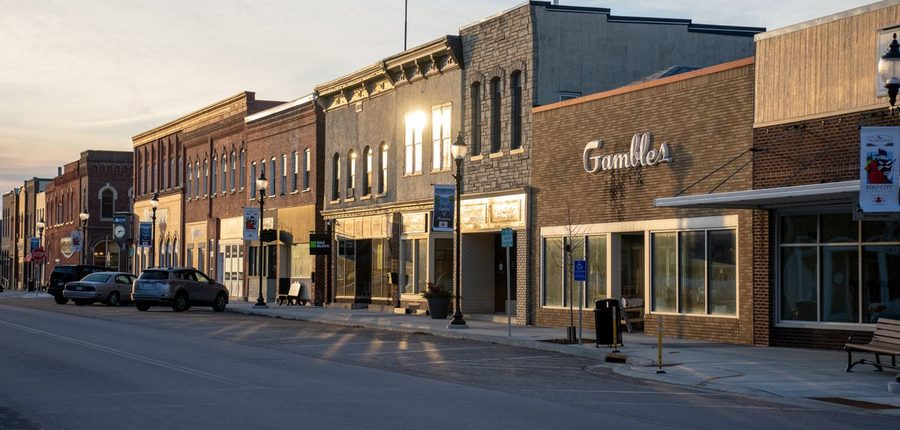

It is a stack of neighborhoods.
Washington DC creator marketing: neighborhoods, not reach
Nobody in Washington DC decides where to eat, book, train, or shop based on the whole city. They decide based on their neighborhood, their side of the river, and the Metro ride they are willing to take. So run creator marketing the same way: pick creators neighborhood by neighborhood, judge them by local reach, and let a month of local posts do what one citywide post cannot.
By Jeff, Founder, Magpie · November 11, 2026 · Magpie Learn hub
Citywide reach is the wrong number in DC
A big reach number sounds useful until you ask the only question that matters: reach where? A post seen by a large audience spread across the country, or even spread thinly across the whole DC metro, spends most of its attention on people who will never cross town for a dinner, a haircut, a class, or a Saturday shop. DC is loyal at neighborhood scale. People have their blocks, their regular spots, and the few neighborhoods they travel to on purpose.
That is why this guide starts with the map, not the roster. Your trade area is the market. Once you know which neighborhoods your customers actually come from, the creator choice gets simple: find the local voices those neighborhoods already follow, and book them one visit at a time. It is the same neighborhood logic behind creator visits for DC restaurants, applied to every kind of local business, from salons and fitness studios to retail and venues.
Three moves before you book anyone
Draw your real trade area
Start with the neighborhood you are in, then add the one or two your customers already travel from. Ask at the register, look at reservations, and be honest about the river and the Metro: for many DC businesses, Arlington or Bethesda is closer in real travel time than a neighborhood across the District.
Match a voice to each neighborhood
No single creator is trusted equally in Adams Morgan and on Capitol Hill. Pick a creator whose life and audience sit in each neighborhood you named: the regular who posts there, eats there, and gets comments from neighbors making plans there.
Sequence the visits across the month
Spread visits across different days and different neighborhood voices instead of stacking them into one weekend. A guest who misses the first post meets the third one, and your business starts to look like a place the whole area keeps choosing.
Judge every creator inside the neighborhood, not the city
On Magpie, creators are ranked and discovered by local reach, the share of their audience that lives in the market, not by follower count. Use that number at neighborhood level. A creator with a modest following that is concentrated near your business will usually outperform a larger account whose local slice is thin, because more of the people who see the post can actually act on it this week.
Check it the plain way too, using the method in how to tell if a creator's followers actually live in your city. Read the comments on their recent posts. Do people sound like neighbors, naming streets, stations, and friends they want to bring? Do their posts return to the same part of town? That pattern is worth more than a polished media kit aimed at everyone, everywhere.
One clear offer, one honest post, written down first
- ✓The offer: say what the visit covers, for how many people, and its ceiling. Creators claim it, or you invite specific creators by local reach in the neighborhoods you picked.
- ✓The visit: the creator comes in like a real customer, in the neighborhood where their audience already spends time.
- ✓The post: a comped visit is 1 post or reel plus 1 story that shares the post, posted within 48 hours, honest and disclosed. The full standard is in what a comped creator visit actually includes.
- ✓The brief: facts and must mentions, not a script. Address, hours, parking or nearest Metro stop, and the one thing this visit is for. Leave the verdict to the creator, the way a good creator brief always does.
- ✓The paid lane, when you want it: book a specific creator at their own rate, with a $50 floor, and the creator keeps 97 percent. A paid booking carries the deliverables set in its terms.
Run that rhythm across two or three neighborhoods in a month and the pattern changes. Your business is no longer a place people saw once in a big feed. It is a place their own neighborhood keeps posting about, in more than one part of the city at once.
A DC roster built for the way DC actually moves
Washington DC is a founding Magpie market, and the market is the full metro: the District plus Arlington and Alexandria in Virginia and Bethesda and Silver Spring in Maryland, because that is how DC customers actually move. Creators in that market are ranked by local reach, not follower count, and posting on time earns Momentum points, which raise a creator's visibility to local businesses.
The founding plans keep the pricing published and simple. Self-Service is $199 a month for 5 creator visits a month, Growth is $349 a month for 10, and Managed is $699 a month for 20. Founding businesses get $100 off the first month, there is a 3 month minimum, and unused visits roll into the next month, then expire. Start with the Washington DC founding market page, then work through the sourcing guide to finding local influencers in Washington DC.
What else do DC businesses ask?
How does creator marketing work in Washington DC?
It works neighborhood by neighborhood. A DC business picks creators by local reach, the share of their audience that lives in the DC metro, and aims each visit at the neighborhoods its customers actually come from. A comped visit is 1 post or reel plus 1 story that shares the post, posted within 48 hours, honest and disclosed. A paid booking carries the deliverables set in its terms, at the creator's own rate.
Why is local reach more useful than follower count in DC?
A follower count tells you how big an account is. It does not tell you where those people live, and DC decisions are made by neighborhood and by Metro line. A creator with a smaller following concentrated in Capitol Hill or Adams Morgan can send more real customers to a business there than a much larger account whose audience is spread across the country. Local reach is the number that shows that concentration before you book.
Which DC neighborhoods and nearby areas should a business start with?
Start with your own neighborhood, then add the areas your customers already travel from. In the District that often means Adams Morgan and U Street for late night, Capitol Hill for repeat neighbors, Georgetown for planned visits and shopping, and H Street and Dupont Circle in between. Then follow your real trade area across the river and the District line: Arlington and Alexandria in Virginia, and Bethesda and Silver Spring in Maryland are all part of the DC market on Magpie.
What does a business get from one DC creator visit?
A comped visit gives you 1 post or reel plus 1 story that shares the post, posted within 48 hours, honest and disclosed, from a creator whose audience lives in the market. A paid booking gives you the deliverables written in the booking terms, at the creator's own rate with a $50 floor, and the creator keeps 97 percent. Posting on time earns the creator Momentum points, which raise their visibility to local businesses.
How much does Magpie cost for a Washington DC business?
Washington DC is a founding Magpie market, with published founding pricing. Self-Service is $199 a month for 5 creator visits a month, Growth is $349 a month for 10, and Managed is $699 a month for 20. Founding businesses get $100 off the first month, plans carry a 3 month minimum, and unused visits roll into the next month, then expire. Creators are ranked by local reach, not follower count.
Pick the neighborhoods. Book the voices they follow.
Browse DC creators by local reach, run comped visits and paid bookings with the deliverable set before the visit, and put your business in front of the neighborhoods that can actually walk in.
Sign-ups live in the Magpie app
Join as a business and put local creator posts in front of people who live near you.
See the full picture first on the businesses page